Sound Processing with Short Time Fourier Transform
This numerical tour explores local Fourier analysis of sounds, and its application to source denoising.
Contents
Installing toolboxes and setting up the path.
You need to download the following files: signal toolbox and general toolbox.
You need to unzip these toolboxes in your working directory, so that you have toolbox_signal and toolbox_general in your directory.
For Scilab user: you must replace the Matlab comment '%' by its Scilab counterpart '//'.
Recommandation: You should create a text file named for instance numericaltour.sce (in Scilab) or numericaltour.m (in Matlab) to write all the Scilab/Matlab command you want to execute. Then, simply run exec('numericaltour.sce'); (in Scilab) or numericaltour; (in Matlab) to run the commands.
Execute this line only if you are using Matlab.
getd = @(p)path(p,path); % scilab users must *not* execute this
Then you can add the toolboxes to the path.
getd('toolbox_signal/'); getd('toolbox_general/');
Warning: Name is nonexistent or not a directory: toolbox_signal Warning: Name is nonexistent or not a directory: toolbox_general
Local Fourier analysis of sound.
A sound is a 1D signal that is locally highly oscillating and stationary. A local Fourier analysis is thus usefull to study the property of the sound such as its local amplitude and frequency.
First we load a sound, with a slight sub-sampling
n = 1024*16;
options.n = n;
[x,fs] = load_sound('bird', n);
Warning: WAVREAD will be removed in a future release. Use AUDIOREAD instead.
You can actually play a sound. In case this does not work, you need to run the command wavwrite(x(:)', 'tmp.wav') and click on the saved file 'tmp.wav' to read it.
sound(x(:)',fs);
We can display the sound.
clf; plot(1:n,x); axis('tight'); set_graphic_sizes([], 20); title('Signal');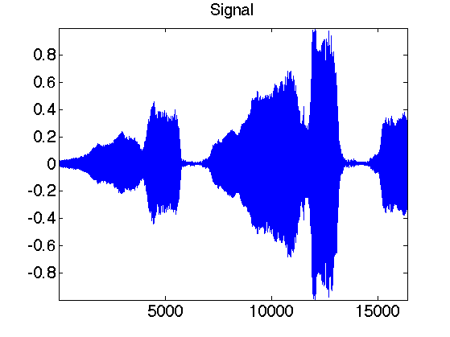
Local zooms on the sound show that it is highly oscilating.
p = 512; t = 1:n; clf; sel = n/4 + (0:p-1); subplot(2,1,1); plot(t(sel),x(sel)); axis tight; sel = n/2 + (0:p-1); subplot(2,1,2); plot(t(sel),x(sel)); axis tight;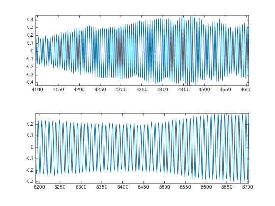
Exercice 1: (check the solution) Compute the local Fourier transform around a point t0 of x, which is the FFT (use the function fft) of the windowed signal x.*h where h is smooth windowing function located around t0. For instance you can use for h a Gaussian bump centered at t0. To center the FFT for display, use fftshift.
exo1;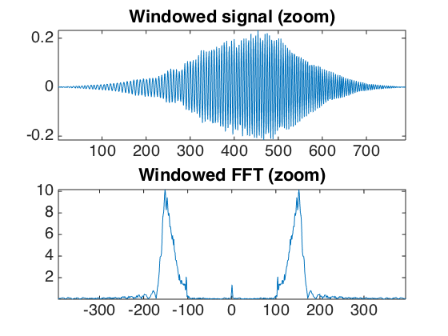
A good windowing function should balance both time localization and frequency localization.
t = linspace(-10,10,2048); eta = 1e-5; vmin = -2;
The block window has a sharp transition and thus a poor frequency localization.
h = double( abs(t)<1 ); hf = fftshift(abs(fft(h))); hf = log10(eta+hf); hf = hf/max(hf); clf; subplot(2,1,1); title('Block window'); plot(t, h); axis([-2 2, -.1, 1.1]); subplot(2,1,2); plot(t, hf); axis([-2 2, vmin, 1.1]); title('Fourier transform');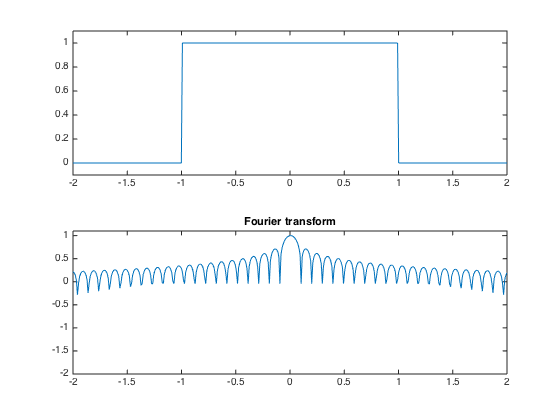
A Hamming window is smoother.
h = cos(t*pi()/2) .* double(abs(t)<1); hf = fftshift(abs(fft(h))); hf = log10(eta+hf); hf = hf/max(hf); clf; subplot(2,1,1); title('Hamming window'); plot(t, h); axis([-2 2, -.1, 1.1]); subplot(2,1,2); plot(t, hf); axis([-2 2, vmin, 1.1]); title('Fourier transform');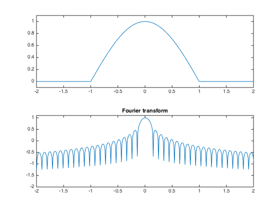
A Haning window has continuous derivatives.
h = (cos(t*pi())+1)/2 .* double(abs(t)<1); hf = fftshift(abs(fft(h))); hf = log10(eta+hf); hf = hf/max(hf); clf; subplot(2,1,1); title('Haning window'); plot(t, h); axis([-2 2, -.1, 1.1]); subplot(2,1,2); plot(t, hf); axis([-2 2, vmin, 1.1]); title('Fourier transform');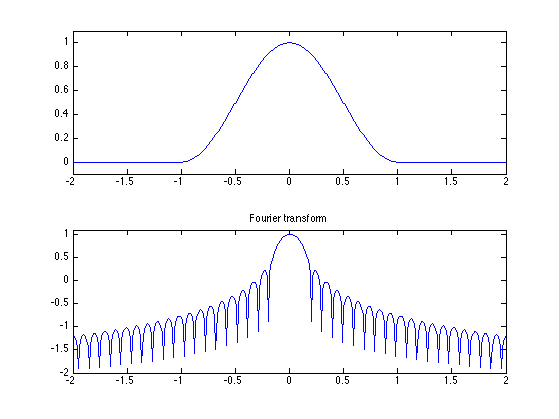
A normalized Haning window has a sharper transition. It has the advantage of generating a tight frame STFT, and is used in the following.
h = sqrt(2)/2 * (1+cos(t*pi())) ./ sqrt( 1+cos(t*pi()).^2 ) .* double(abs(t)<1); hf = fftshift(abs(fft(h))); hf = log10(eta+hf); hf = hf/max(hf); clf; subplot(2,1,1); title('Normalized Haning window'); plot(t, h); axis([-2 2, -.1, 1.1]); subplot(2,1,2); plot(t, hf); axis([-2 2, vmin, 1.1]); title('Fourier transform');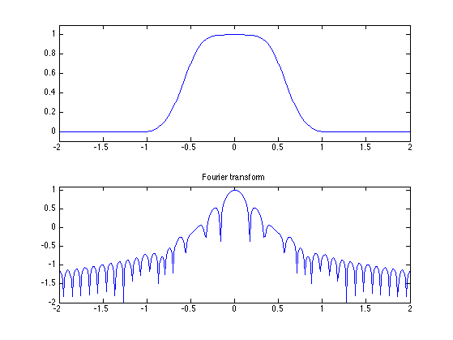
Short time Fourier transform.
Gathering a local Fourier transform at equispaced point create a local Fourier transform, also called spectrogram. By carefully chosing the window, this transform corresponds to the decomposition of the signal in a redundant tight frame. The redundancy corresponds to the overlap of the windows, and the tight frame corresponds to the fact that the pseudo-inverse is simply the transposed of the transform (it means that the same window can be used for synthesis with a simple summation of the reconstructed signal over each window).
The only parameters of the transform are the size of the window and the overlap.
% size of the window w = 64*2; % overlap of the window q = w/2;
Gabor atoms are computed using a Haning window. The atoms are obtained by translating in time and in frequency (modulation) the window.
t = 0:3*w-1; t1 = t-2*w; f = w/8; % Position 0, frequency 0. g1 = sin( pi*t/w ).^2 .* double(t<w); % Position 2*w, frequency 0. g2 = sin( pi*t1/w ).^2 .* double( t1<w & t1>=0 ); % Position 0, frequency w/8 g3 = g1 .* sin( t * 2*pi/w * f); % Position 2*w, frequency w/8 g4 = g2 .* sin( t * 2*pi/w * f); % display clf; subplot(2,2,1); plot(g1); axis('tight'); title('Position 0, frequency 0'); subplot(2,2,2); plot(g2); axis('tight'); title('Position 2*w, frequency 0'); subplot(2,2,3); plot(g3); axis('tight'); title('Position 0, frequency w/8'); subplot(2,2,4); plot(g4); axis('tight'); title('Position 2*w, frequency w/8');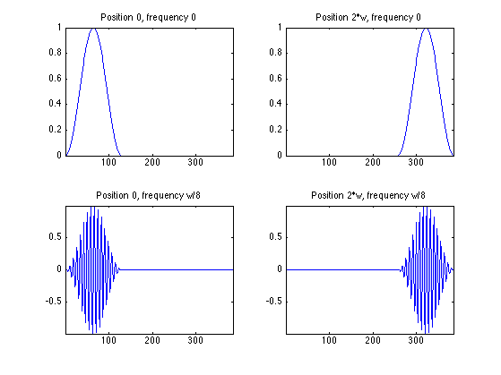
We can compute a spectrogram of the sound to see its local Fourier content. The number of windowed used is (n-noverlap)/(w-noverlap)
S = perform_stft(x,w,q, options);
To see more clearly the evolution of the harmonics, we can display the spectrogram in log coordinates. The top of the spectrogram corresponds to low frequencies.
% display the spectrogram clf; imageplot(abs(S)); axis('on'); % display log spectrogram plot_spectrogram(S,x);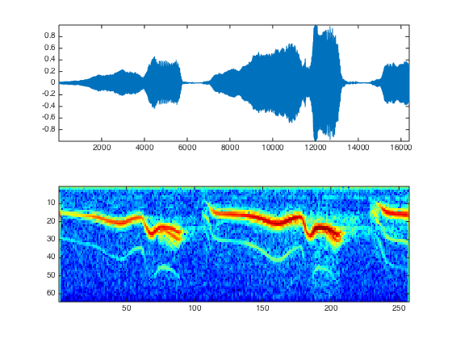
The STFT transform is decomposing the signal in a redundant tight frame. This can be checked by measuring the energy conservation.
% energy of the signal e = norm(x,'fro').^2; % energy of the coefficients eS = norm(abs(S),'fro').^2; disp(strcat(['Energy conservation (should be 1)=' num2str(e/eS)]));
Energy conservation (should be 1)=1
One can also check that the inverse transform (which is just the transposed operator - it implements exactly the pseudo inverse) is working fine.
% one must give the signal size for the reconstruction x1 = perform_stft(S,w,q, options); disp(strcat(['Reconstruction error (should be 0)=' num2str( norm(x-x1, 'fro')./norm(x,'fro') ) ]));
Reconstruction error (should be 0)=2.2401e-16
Audio Denoising
One can perform denosing by a non-linear thresholding over the transfomede Fourier domain.
First we create a noisy signal
sigma = .2; xn = x + randn(size(x))*sigma;
Play the noisy sound.
sound(xn,fs);
Display the Sounds.
clf; subplot(2,1,1); plot(x); axis([1 n -1.2 1.2]); set_graphic_sizes([], 20); title('Original signal'); subplot(2,1,2); plot(xn); axis([1 n -1.2 1.2]); set_graphic_sizes([], 20); title('Noisy signal');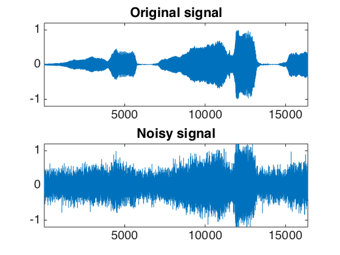
One can threshold the spectrogram.
% perform thresholding Sn = perform_stft(xn,w,q, options); SnT = perform_thresholding(Sn, 2*sigma, 'hard'); % display the results subplot(2,1,1); plot_spectrogram(Sn); subplot(2,1,2); plot_spectrogram(SnT);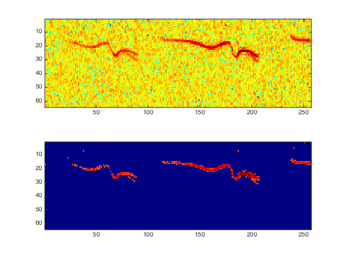
Exercice 2: (check the solution) A denoising is performed by hard or soft thresholding the STFT of the noisy signal. Compute the denosing SNR with both soft and hard thresholding, and compute the threshold that minimize the SNR. Remember that a soft thresholding should be approximately twice smaller than a hard thresholding. Check the result by listening. What can you conclude about the quality of the denoised signal ?
exo2;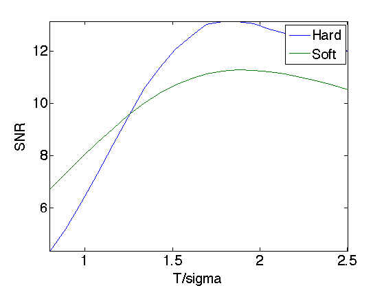
Exercice 3: (check the solution) Display and hear the results. What do you notice ?
exo3;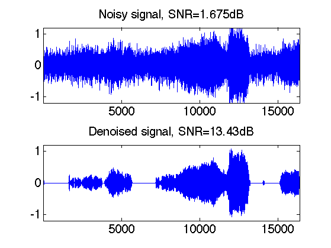
Audio Block Thresholding
It is possible to remove musical noise by thresholding blocks of STFT coefficients.
Denoising is performed by block soft thresholding.
% perform thresholding Sn = perform_stft(xn,w,q, options); SnT = perform_thresholding(Sn, sigma, 'block'); % display the results subplot(2,1,1); plot_spectrogram(Sn); subplot(2,1,2); plot_spectrogram(SnT);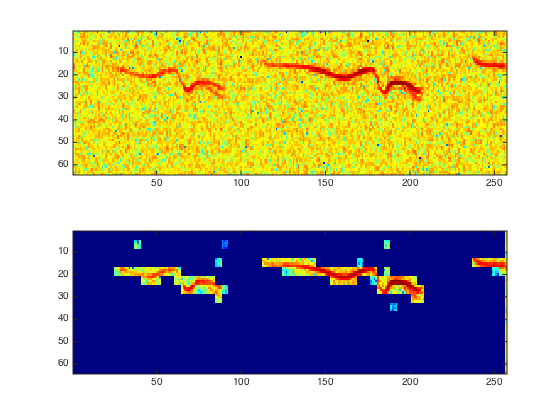
Exercice 4: (check the solution) Trie for various block sizes and report the best results.
exo4;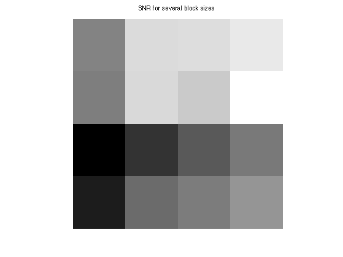